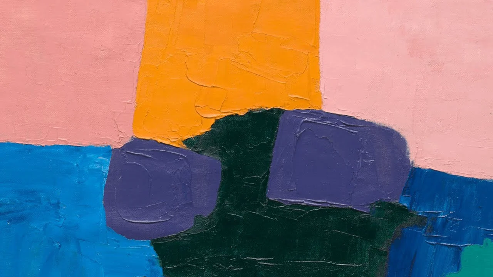

Etel Adnan
A poet and painter, Adnan made compact pictures that read like stanzas: unprimed or lightly worked surfaces, saturated reds and sun-yellows, and a single broad gesture or arc that can feel like a horizon, a path, or a line of text set free. Formally, she pares painting down to scale, touch, and hue so that nothing is ornamental. The mood is unguarded: joy and grief in the same breath, a Mediterranean light held still, and a politics of closeness to land and place without illustrational storytelling.
